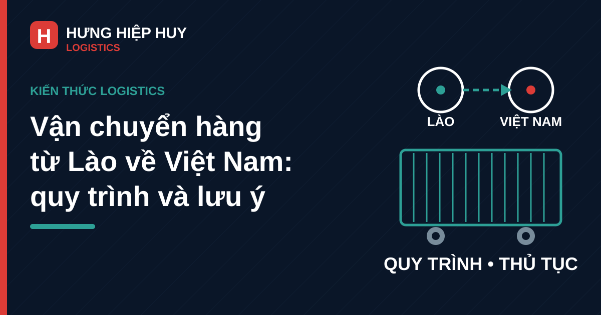

Vận chuyển hàng từ Lào về Việt Nam: quy trình và lưu ý

Lào là nguồn cung quan trọng của nhiều mặt hàng về Việt Nam: nông sản, gỗ và sản phẩm từ gỗ, khoáng sản, hàng tiêu dùng và hàng gia công. Tuy nhiên, vận chuyển hàng từ Lào về Việt Nam không giống như chạy một chuyến nội địa thông thường — hàng phải qua cửa khẩu, làm thủ tục hải quan hai phía, rồi mới về kho hoặc ra cảng để đi tiếp. Doanh nghiệp nắm rõ quy trình từ đầu sẽ chủ động được thời gian, chi phí và tránh tình trạng hàng kẹt ở cửa khẩu. Bài viết này tổng hợp quy trình thực tế và những lưu ý quan trọng khi nhập hàng từ Lào về Việt Nam.
Vì sao hàng từ Lào về Việt Nam ngày càng nhiều?
Việt Nam và Lào có chung đường biên giới dài, nhiều cửa khẩu quốc tế và hệ thống hiệp định thương mại tạo thuận lợi cho hàng hóa qua lại. Với doanh nghiệp miền Trung, Lào còn là thị trường cung ứng gần: hàng từ các tỉnh Nam Lào và Trung Lào về Đà Nẵng hay các khu công nghiệp miền Trung có quãng đường ngắn hơn nhiều so với nhập từ các nước xa. Bên cạnh đó, nhiều doanh nghiệp Việt Nam đầu tư trồng trọt, khai thác và gia công tại Lào, nên nhu cầu đưa hàng thành phẩm và nguyên liệu về Việt Nam diễn ra thường xuyên, không chỉ theo mùa vụ.
Các cửa khẩu chính và tuyến đường về miền Trung
Việc chọn cửa khẩu ảnh hưởng trực tiếp đến thời gian và chi phí chuyến hàng. Với hàng về miền Trung, các cửa khẩu thường được sử dụng gồm Lao Bảo (Quảng Trị), Cầu Treo (Hà Tĩnh), Cha Lo (Quảng Bình) và Nam Giang (Quảng Nam). Trong đó, cửa khẩu Nam Giang có lợi thế về vị trí đối với hàng về Đà Nẵng và các tỉnh lân cận, vì quãng đường từ cửa khẩu về cảng Đà Nẵng ngắn hơn so với đi vòng qua các cửa khẩu phía Bắc. Doanh nghiệp nên chọn cửa khẩu căn cứ vào nơi hàng xuất phát phía Lào, điểm giao hàng phía Việt Nam và loại hình thủ tục áp dụng cho mặt hàng đó, thay vì mặc định một cửa khẩu duy nhất cho mọi chuyến. Chi tiết về từng cửa khẩu đã được giới thiệu trong bài viết Các cửa khẩu Việt – Lào: tuyến nào phù hợp với hàng của bạn.
Quy trình vận chuyển hàng từ Lào về Việt Nam
Bước 1: Xác nhận hàng, tuyến và phương án vận chuyển
Trước khi xe lăn bánh, doanh nghiệp và nhà vận chuyển cần thống nhất: mặt hàng là gì, số lượng và cách đóng gói ra sao, hàng đi nguyên container hay hàng lẻ, điểm lấy hàng phía Lào và điểm giao phía Việt Nam, thời gian giao mong muốn. Với hàng nguyên container, cần chốt loại cont phù hợp (20ft, 40ft, 40HC hay cont lạnh) — cách chọn loại cont đã được phân tích trong bài viết Container 20ft, 40ft và 40HC: chọn loại nào cho hàng của bạn. Thống nhất sớm giúp nhà vận chuyển điều xe và chuẩn bị giấy tờ đúng ngay từ đầu, tránh phát sinh khi hàng đã lên xe.
Bước 2: Gom hàng và làm thủ tục phía Lào
Hàng được tập kết tại kho hoặc điểm giao phía Lào, kiểm đếm và đóng gói theo đúng thỏa thuận. Song song đó, phía xuất hàng tại Lào chuẩn bị bộ chứng từ xuất khẩu: hóa đơn, phiếu đóng gói, giấy chứng nhận xuất xứ (C/O) nếu có, và các giấy phép chuyên ngành tùy mặt hàng. Doanh nghiệp nên kiểm tra kỹ bộ chứng từ này trước khi xe xuất phát, vì sai sót ở phía Lào sẽ kéo dài thời gian thông quan phía Việt Nam.
Bước 3: Thông quan tại cửa khẩu
Đây là khâu quyết định thời gian của chuyến hàng. Tại cửa khẩu, hàng hóa được khai báo hải quan nhập khẩu vào Việt Nam, nộp thuế và phí theo quy định (nếu có), đồng thời kiểm tra chuyên ngành nếu mặt hàng thuộc diện quản lý — ví dụ kiểm dịch với nông sản, kiểm tra nguồn gốc với gỗ. Doanh nghiệp làm việc với đơn vị khai báo hải quan có kinh nghiệm tuyến Lào sẽ xử lý nhanh hơn, vì mỗi cửa khẩu có cách vận hành và yêu cầu hồ sơ khác nhau đôi chút. Về thủ tục hải quan tuyến Lào nói chung, bạn có thể tham khảo thêm bài viết Thủ tục hải quan xuất khẩu sang Lào: quy trình và lưu ý để hình dung cách cơ quan hải quan làm việc trên tuyến này.
Bước 4: Vận chuyển nội địa về kho hoặc cảng
Sau khi thông quan, hàng được vận chuyển nội địa về kho của doanh nghiệp, về nhà máy, hoặc ra cảng Đà Nẵng để đóng ghép xuất đi nước thứ ba. Chặng nội địa này cần nhà vận chuyển chạy tuyến quen, nắm rõ đường và thời gian làm việc của kho, cảng nhận hàng. Doanh nghiệp chạy hàng từ cảng Đà Nẵng đi các tỉnh có thể xem thêm bài viết Vận chuyển container nội địa từ cảng Đà Nẵng đi các tỉnh. Nếu hàng cần lưu kho chờ phân phối, cần tính trước phương án kho bãi — tham khảo bài viết Thuê kho bãi container tại Đà Nẵng: giá và lưu ý.
Bước 5: Giao hàng và đối soát chứng từ
Khi hàng về đến điểm giao, hai bên kiểm đếm, ký xác nhận và đối soát toàn bộ chứng từ: vận đơn, tờ khai, biên bản giao nhận. Doanh nghiệp nên giữ đủ bộ chứng từ nhập khẩu để phục vụ kiểm tra sau thông quan và quyết toán thuế. Khâu này tuy ngắn nhưng quan trọng, vì thiếu chứng từ về sau sẽ rất khó bổ sung khi xe và hàng đã bàn giao xong.
Giấy tờ và thủ tục nhập khẩu cần chuẩn bị
Bộ giấy tờ cơ bản cho một lô hàng từ Lào về Việt Nam thường gồm: hợp đồng mua bán, hóa đơn thương mại, phiếu đóng gói, vận đơn, giấy chứng nhận xuất xứ (C/O form S nếu muốn hưởng ưu đãi thuế quan), tờ khai hải quan nhập khẩu và các giấy phép chuyên ngành tùy mặt hàng. Doanh nghiệp lần đầu nhập hàng nên gửi trước bộ chứng từ nháp cho đơn vị khai hải quan kiểm tra, thay vì chờ đến ngày xe về cửa khẩu mới phát hiện thiếu giấy. Về danh mục giấy tờ xuất nhập khẩu tuyến Lào, bài viết Xuất khẩu đi Lào cần giấy tờ gì cũng liệt kê những loại giấy tờ thường gặp trên tuyến này để doanh nghiệp đối chiếu.
Thời gian và chi phí cần lưu ý
Thời gian một chuyến hàng từ Lào về Việt Nam phụ thuộc vào ba yếu tố: quãng đường từ điểm lấy hàng đến cửa khẩu, thời gian thông quan tại cửa khẩu và chặng nội địa về điểm giao. Trong ba yếu tố đó, thông quan là khâu khó đoán nhất — hồ sơ đầy đủ, mặt hàng không thuộc diện kiểm tra chuyên sâu thì xe qua cửa khẩu nhanh; ngược lại, thiếu giấy tờ hoặc hàng phải kiểm hóa có thể kéo dài thêm đáng kể. Vì vậy doanh nghiệp nên cộng thêm thời gian dự phòng vào kế hoạch, đặc biệt với hàng phải kịp tàu hoặc kịp giao cho đối tác.
Về chi phí, doanh nghiệp nên hỏi báo giá trọn gói và xác nhận rõ các khoản đã bao gồm: cước vận chuyển phía Lào, cước nội địa phía Việt Nam, phí khai báo hải quan, phí cầu đường và các phụ phí có thể phát sinh. Báo giá rõ ràng ngay từ đầu giúp tránh tranh cãi khi chuyến hàng phát sinh chi phí ngoài dự kiến. Cách cước vận chuyển container được tính đã được giải thích trong bài viết Cách tính cước vận chuyển container.
Lưu ý theo từng loại hàng
Mỗi nhóm hàng có yêu cầu riêng. Hàng nông sản thường phải qua kiểm dịch thực vật và cần bảo quản đúng điều kiện trên suốt hành trình, nhất là khi thời tiết nắng nóng. Hàng gỗ và sản phẩm từ gỗ cần chứng từ chứng minh nguồn gốc hợp pháp, vì đây là mặt hàng được kiểm soát chặt. Hàng khoáng sản và hàng rời cần phương án đóng gói, che phủ và cân tải trọng đúng quy định. Hàng gia công, hàng tạm nhập tái xuất hoặc hàng chuyển khẩu qua cảng Đà Nẵng cần thống nhất trước với đơn vị khai báo về loại hình tờ khai, vì sai loại hình sẽ phải làm lại thủ tục. Doanh nghiệp nên trao đổi kỹ đặc tính hàng hóa với nhà vận chuyển và đơn vị khai báo ngay từ bước báo giá, đừng đợi đến khi hàng ra cửa khẩu mới bổ sung yêu cầu.
Sai lầm thường gặp khi nhập hàng từ Lào
Thứ nhất, chỉ chốt giá cước mà không chốt rõ ai lo thủ tục phía Lào và phía Việt Nam, đến cửa khẩu mới phát sinh phí dịch vụ ngoài dự kiến. Thứ hai, gửi chứng từ muộn hoặc chứng từ thiếu nhất quán (số lượng trên hóa đơn khác phiếu đóng gói), khiến tờ khai phải sửa nhiều lần. Thứ ba, không tính dư thời gian thông quan nên hàng trễ kế hoạch sản xuất hoặc trễ tàu. Thứ tư, chọn cửa khẩu theo thói quen thay vì theo vị trí hàng và điểm giao, làm tăng quãng đường nội địa không cần thiết. Và thứ năm, giao toàn bộ lô hàng cho một đầu mối duy nhất mà không giữ lại bản sao bộ chứng từ để đối soát sau này.
Kết luận
Vận chuyển hàng từ Lào về Việt Nam chạy trơn tru khi doanh nghiệp chuẩn bị đủ ba thứ: chứng từ đầy đủ và nhất quán, cửa khẩu và tuyến đường phù hợp, và nhà vận chuyển cùng đơn vị khai báo có kinh nghiệm tuyến Lào. Làm tốt ba việc này, hàng về đúng hẹn, chi phí rõ ràng, không kẹt ở cửa khẩu. Doanh nghiệp có hàng cần đưa từ Lào về Việt Nam, cần tư vấn tuyến, thủ tục và báo giá, có thể liên hệ Hưng Hiệp Huy Logistics để được hỗ trợ.
Cần tư vấn tuyến Lào, thủ tục và báo giá cho lô hàng từ Lào về Việt Nam?
Liên hệ Hưng Hiệp Huy Logistics — Hotline/Zalo: 0901 995 665 — Email: hiepnguyen.hunghiephuy@gmail.com — Địa chỉ: 756 Ngô Quyền, Đà Nẵng. Xem thêm các dịch vụ vận chuyển của chúng tôi.
Bài viết liên quan: Các cửa khẩu Việt – Lào: tuyến nào phù hợp với hàng của bạn · Thủ tục hải quan xuất khẩu sang Lào: quy trình và lưu ý · Xuất khẩu đi Lào cần giấy tờ gì · Vận chuyển container nội địa từ cảng Đà Nẵng đi các tỉnh: quy trình và lưu ý